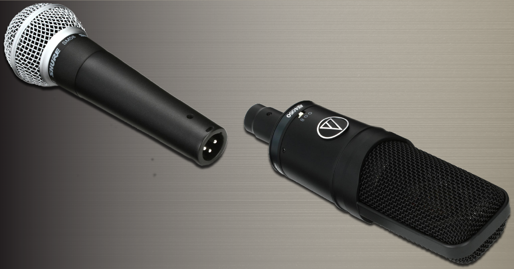
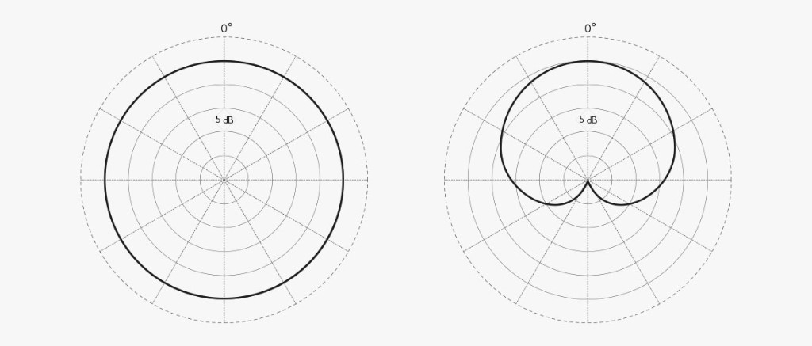
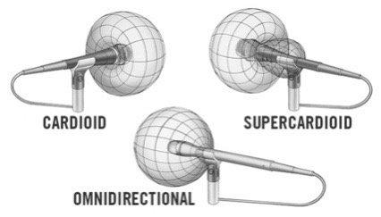
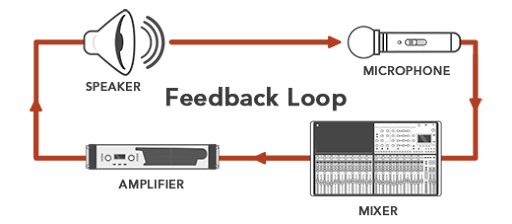
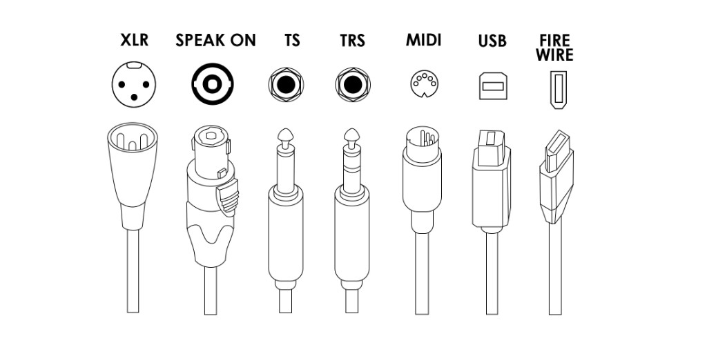
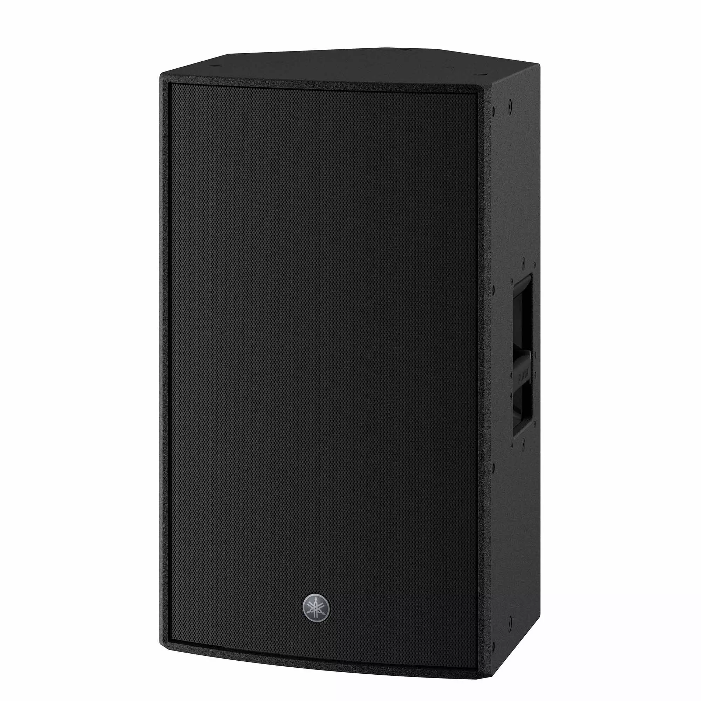
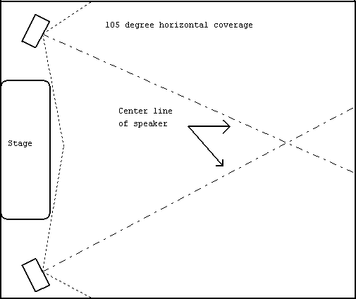
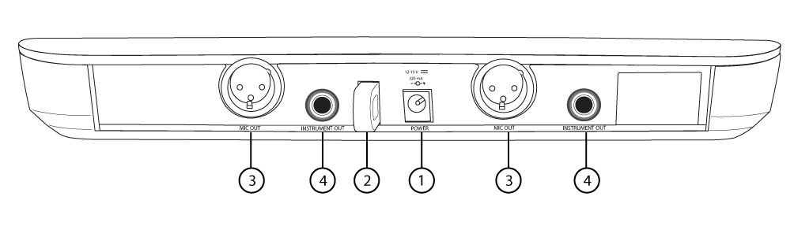
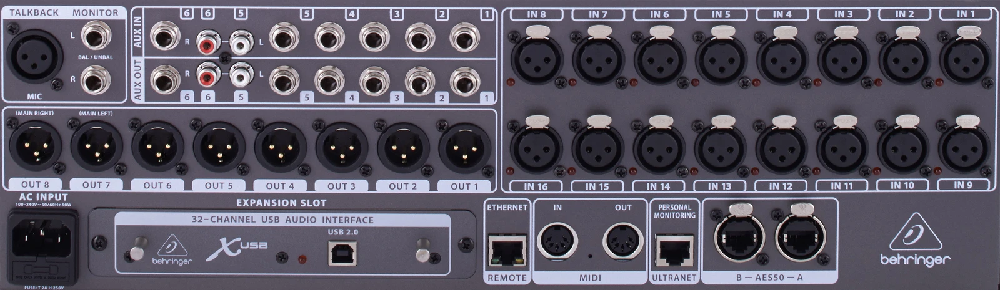
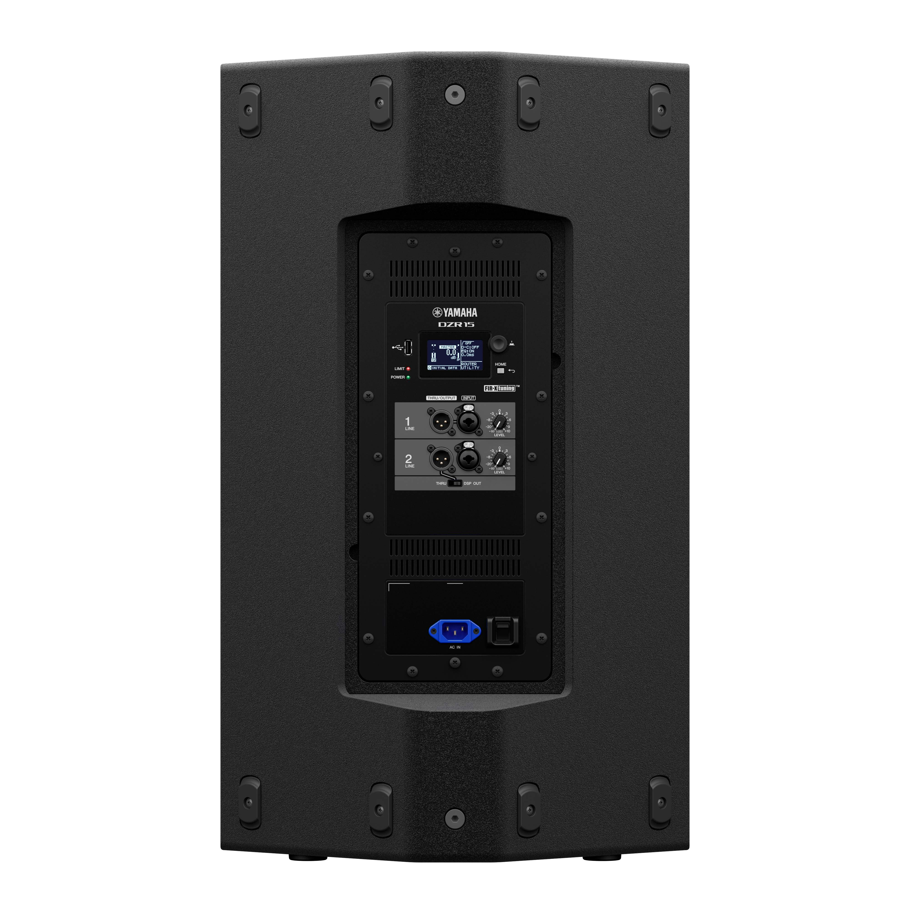

Sound Team
1 Overview
- Understand the basic signal flow
- Learn what each hardware device does
- Learn how to place and connect the system
- Avoid common beginner mistakes
2 1. Understanding Signal Flow
Every section of the system has an input and an output.
Basic path
Microphone -> Mixer -> Speaker
Why this matters
- Troubleshooting gets easier
- You can check one stage at a time
- You understand what each device is responsible for
3 2. Microphone
Microphones are the first step in the chain.
- They turn sound in the air into an electrical signal
- Choice of mic affects tone, sensitivity, and feedback risk
- In live sound, dynamic microphones are the most common general-purpose choice
- Condenser microphones are often used for instruments or for capturing a wider sound such as choir, orchestra, or room ambience
4 Dynamic vs condenser
- Dynamic microphones are usually tougher and more common for live vocals
- Condenser microphones are more sensitive and are often used when more detail is needed

5 When do we use which?
| Situation | Better first choice | Why |
|---|---|---|
| Live vocal on stage | Dynamic | Rugged, reliable, and easier to control in a loud room |
| Speech or general stage use | Dynamic | Works well for most everyday PA situations |
| Instrument miking | Condenser | Captures more detail and high-frequency information |
| Choir, orchestra, or room pickup | Condenser | Better for capturing a wider and more detailed sound |
6 Polar patterns — brief introduction
- Cardioid: hears mostly from the front
- Omnidirectional: hears from all directions
Why we care
- Pattern affects bleed and feedback
- Cardioid is the most common live vocal choice
7 Polar patterns — examples


- Omnidirectional picks up sound from almost every direction
- Cardioid focuses on the front and rejects more from the rear
- Supercardioid is even tighter in front, but has a small rear pickup
8 Feedback (howling)
- The speaker sends sound into the room
- The microphone picks that speaker sound up again
- The signal goes back through the mixer and speaker
- The loop repeats and builds into a howl
Common causes
- Mic is too close to a speaker or monitor
- Gain is too high
- Too many open mics
9 Feedback — what to fix first

- Change placement first
- Lower gain if needed
- Ring out problem frequencies only after placement is reasonable
10 3. Cables and connectors
Connectors matter because they tell us what kind of signal we are carrying and what it should plug into.
- The connector often tells you what kind of job that cable is doing
- Learning the common connector shapes saves time during setup and troubleshooting

11 Common connectors
- XLR: most common for microphones and pro audio
- TS: common for instruments and some unbalanced signals
- EtherCON: rugged locking network connector used for digital audio / control
What to remember - XLR is the one you will use constantly
12 Cable management
- Learn over-under wrapping
- Do not twist cables into tight loops
- Label important cables
- Keep signal cables tidy so faults are easier to find
Quick demo
13 4. Mixer
The mixer is the control center of the system.
- Combines signals from microphones and other sources
- Adjusts level and tone
- Routes signals to mains, monitors, recording, and other destinations
Our example mixer: Behringer X32
14 FOH and mixer placement
FOH means Front of House.
- This is the position where the engineer listens from the audience area
- FOH is usually the best place to judge what the audience is hearing
- In smaller setups, the mixer may also be at the side of the stage
15 Channel strip basics
On a typical input channel:
- Gain: sets input sensitivity
- EQ: shapes the tone
- Fader: sets how much of the channel goes to the main mix
- Aux send: sends part of the signal somewhere else
Important idea: gain and fader are not the same thing.
16 Monitor mix (Aux Send)
- A monitor mix lets performers hear what they need on stage
- This is often sent from an aux
- The monitor mix does not have to match the main house mix
Example
- Vocalist may want more vocal
- Drummer may want more click or keys
Reference video: Monitor mix example
17 Phantom power (+48 V)
- Many condenser mics need +48 V phantom power
- Many dynamic mics do not need it
- Turn it on only for channels that require it
Example: a condenser like an AT4040 needs phantom power.
18 5. Speakers and amplifiers
- Main speakers cover the audience
- Monitor speakers help performers hear on stage
- Subwoofers handle low frequencies

19 Speaker placement
- Place the speakers so they project directly toward the audience
- Keep the speakers in front of the microphones to help prevent feedback
- In our setup, we usually place the main speakers on the left and right sides of the stage
- Angle them slightly inward, about 15 to 30 degrees, so they cover the audience more evenly
Simple goal: clear coverage for the audience without causing feedback.
20 Speaker placement - example

21 6. Try a real setup
Goal: connect a Shure BLX88 receiver to the X32, then send the mixer output to a Yamaha DZR15.
Signal path
BLX88 -> X32 -> DZR15
22 Mic — BLX88 receiver

- Use the XLR OUT on the BLX88 rear panel
- Connect that to an XLR input on the X32 mixer
23 Mixer — X32 rear panel

- The BLX88 output goes into an X32 XLR input
- Use an XLR cable from the X32 output to the speaker input
- If you are using two main speakers, send Main L to the left speaker and Main R to the right speaker
24 Speaker — DZR15 rear panel

- On the back of the DZR15, look for INPUT 1 or another line input you are using
- Connect the X32 output to that input
- Because the DZR15 is a powered speaker, it does not need a separate external amp between the mixer and the speaker
25 Summary
- Learn the chain: microphone -> mixer -> speaker
- Know the job of each device
- Learn the difference between dynamic and condenser
- Learn the common connectors: XLR, TS, EtherCON
- Understand the basic mixer controls: gain, EQ, fader, aux
- Place speakers for coverage, not chaos